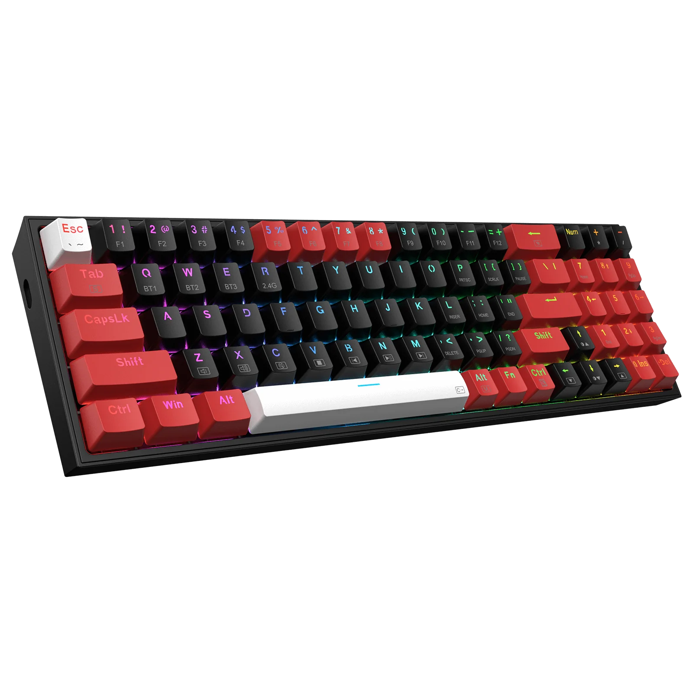
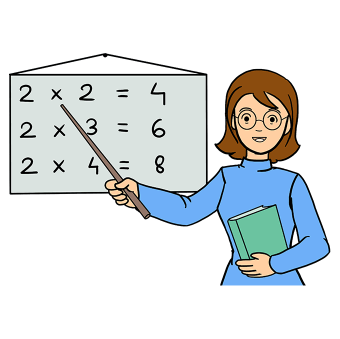

Prezent na dzień dziecka
W mojej opinii, na dzień dziecka dobrym prezentem są pieniądze. Dziecko z pewnością będzie uszczęśliwione, z uwagi na to że będzie mogło za nie kupić to na co ma ochote. Wydaje mi sie to znacznie lepszym rozwiązaniem niż darowanie dziecku prezentu, który niekoniecznie musi sie mu podobać.
Pomysły na prezent

Jeżeli chcesz sprawić radość dziecku, i nie chcesz aby prezentem była gotówka, możesz pomyśleć nad prezentem związanym z jego zainteresowaniami. Przykładowo jeśli dziecko interesuje się koszykówką możesz pomyśleć nad kupieniem mu:
- Nowej piłki koszykarskiej
- Kosza do powieszenia na ścianę w pokoju
- Nowych butów koszykarskich
Dobry prezent na moim przykładzie

Aktualnie, najlepszym prezentem dla mnie byłyby pieniądze, ponieważ zbieram na nowszy telefon. Jeśli jednak ktoś chciałby zorganizować mi podarunek, ucieszyłbym się z:
- wygodnej bluzy
- nowej klawiatury
- lepszej podkładki
Prezent od nauczycieli

Jak wiadomo, szkoła jest bardzo obciążającym obowiązkiem dla większości dzieci i młodzieży. Z tego powodu świetnym prezentem dla każdego ucznia byłyby luźniejsze lekcje, na których dzieci mogłyby odpocząć od ciągłego wysiłku psychicznego w ciągu roku szkolnego.